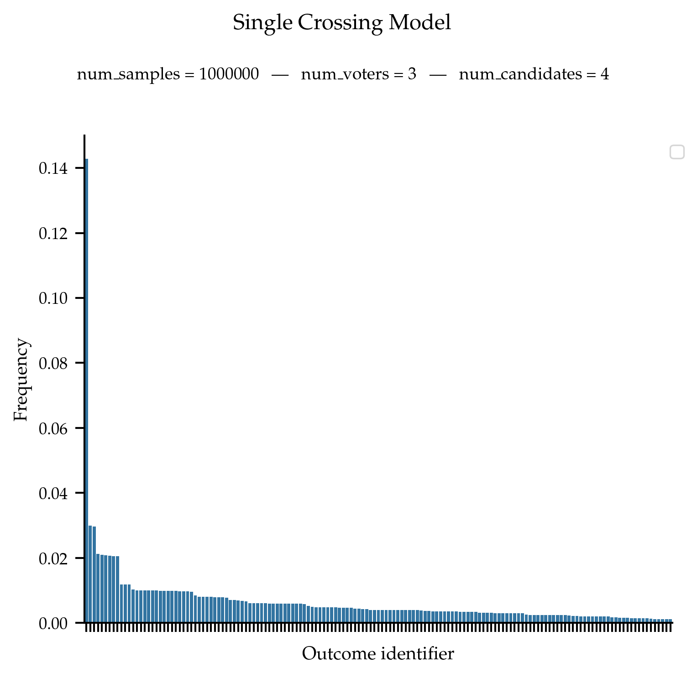
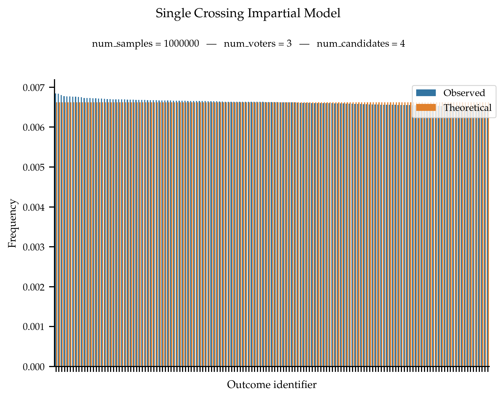

Single-Crossing Models#
Single-crossing preferences are such that the set of voters is one-dimensional: for a given ordering of the voters and any pair of alternatives a, b, the two sets of voters corresponding to the those preferring a over b and those preferring b over a form two segments of the ordering. In other words, following the ordering of the voters, there is single crossing point such that all voters to the left of this point prefer a over b and all voters to the right of this point prefer b over a (or the symmetric case).
- single_crossing(num_voters: int, num_candidates: int, seed: int = None) ndarray[source]#
Generates ordinal votes that are single-crossing. See Elkind, Lackner, Peters (2022) for the definition.
This sampler works as follows: a random single-crossing domain is generated, and votes are then randomly selected from this domain.
The votes in the domain are generated one by one. The first vote is always 0 > 1 > 2 > …. For vote number k, all valid swaps of consecutive candidates are considered. A swap is valid if in vote number k - 1 the two candidates had not already been swapped in any previous iterations. One valid swap is selected uniformly at random and vote number k correspond to vote number k - 1 with the selected swap performed. After m * (m-1) / 2 + 1 swaps, the final vote admit no valid swap (the final vote being m > m - 1 > …). Importantly, the domain is ordered by number of swaps applied to the initial vote.
To sample the votes, we consider the ordered domain. The first sampled vote is always 0 > 1 > 2 > …. Then, every successive vote is selected uniformly at random from all the votes further down in the domain than the previously selected vote (including the latter).
This sampler only generates anonymous and neutral collections of votes. This means that the first vote is always 0 > 1 > 2 > … and that the votes are ordered lexicographically. To obtain a distribution over all single-crossing collections of votes, apply a random permutation of the candidate names and a random permutation of the position of the voters in the collection of votes.
The sampler is inspired by the one used by Szufa, Faliszewski, Skowron, Slinko, Talmon (2020).
Note that the probability distribution over single-crossing profiles yielded by this procedure is unknown. For a uniform distribution over outcomes, see the
single_crossing_impartial()function. The uniform sampler can become very slow as the number of candidates increases. The difficulty lies in computing the probability distribution with which to select votes further down in the domain (instead of a uniform distribution as we use here).Note that for a given number of voters, votes are not sampled independently.
- Parameters:
num_voters (int) – Number of Voters.
num_candidates (int) – Number of Candidates.
seed (int, default:
None) – Seed for numpy random number generator.
- Returns:
Ordinal votes.
- Return type:
np.ndarray
Examples
from prefsampling.ordinal import single_crossing # Sample a single-crossing profile with 2 voters and 3 candidates. single_crossing(2, 3) # For reproducibility, you can set the seed. single_crossing(2, 3, seed=1002)
Validation
The theoretical distribution of this sampler is unknown. We just plot the observed frequencies.
References
An exploration in the theory of optimal income taxation, James Mirrlees, Review of Economic Studies, 38:175–208, 1971.
Voting over income tax schedules, Kevin W.S. Roberts, Journal of Public Economics, 8(3):329–340, 1977.
Drawing a map of elections in the space of statistical cultures, Stanisław Szufa, Piotr Faliszewski, Piotr Skowron, Arkadii Slinko and Nimrod Talmon, Proceedings of AAMAS-2020, pages 1341–1349, 2020.
{kind=link}
- single_crossing_impartial(num_voters, num_candidates, seed=None)[source]#
Generates ordinal votes that satisfy the single-crossing property. See Elkind, Lackner, Peters (2022) for the definition. This sampler ensures that all single-crossing profiles are equally likely to be generated. Note that its running time is exponential in the number of candidates.
This sampler initially generates all single-crossing domains. The collection of vote is then sampled from a domain. Since all domains have been generated, via some counting we can ensure that all profile are equally likely to be generated.
This sampler only generates non-isomorphic and anonymous collection of votes. This means that the first vote is always 0 > 1 > 2 > … and that the votes are ordered lexicographically. To obtain a distribution over all single-crossing collections of votes, apply a random permutation of the candidate names and a random permutation of the position of the voters in the collection of votes.
This sampler can be very slow for large number of candidates. For efficient sampling—but without theoretical guarantees on the distribution of outcomes—consider using
single_crossing().Note that for a given number of voters, votes are not sampled independently.
This sampler was developed by Piotr Faliszewski.
- Parameters:
num_voters (int) – Number of Voters.
num_candidates (int) – Number of Candidates.
seed (int, default:
None) – Seed for numpy random number generator.
- Returns:
Ordinal votes.
- Return type:
np.ndarray
Examples
from prefsampling.ordinal import single_crossing_impartial # Sample a single-crossing profile with 2 voters and 3 candidates. single_crossing_impartial(2, 3) # For reproducibility, you can set the seed. single_crossing_impartial(2, 3, seed=1002)
# This already takes a very long time... (only 10 candidates) single_crossing_impartial(2, 10)
Validation
This sampler is meant to follow a uniform probability distribution over all non-isomorphic and anonymous single-crossing profiles.
References
An exploration in the theory of optimal income taxation, James Mirrlees, Review of Economic Studies, 38:175–208, 1971.
Voting over income tax schedules, Kevin W.S. Roberts, Journal of Public Economics, 8(3):329–340, 1977.
{kind=link}
- class SingleCrossingNode(vote, seed=None)[source]#
Node in the graph of all the single-crossing set of votes. A node represents a vote and is connected to all the votes that can be accessed by valid swaps of the candidates. The resulting graph is a directed acyclic graph.
- count_elections(n)[source]#
Counts the number of elections. This number is used to define the probability distribution over the nodes when sampling votes.